논문 출판 수준 그래픽에 오신 것을 환영합니다!
학습 목표:
- ggrepel로 텍스트 라벨 겹침 방지
- patchwork로 다중 패널 Figure 조합 (A, B, C 라벨링)
- viridis로 색맹 친화적 색상 사용
- 학술지 스타일 테마 적용
- ggsave로 고해상도 저장
이 과정을 마치면:
- Nature, Science 등 학술지 기준의 Figure 제작 가능
- 여러 그래프를 하나의 Figure로 조합 가능
- 색맹 친화적이고 전문적인 시각화 구현
1장: ggrepel - 텍스트 라벨 최적화
문제: 텍스트 겹침
산점도에 라벨을 추가할 때, geom_text()는 라벨이 서로
겹치는 문제가 있습니다.
# 문제 상황: 라벨이 겹침
ggplot(mtcars_labeled, aes(x = wt, y = mpg, label = model)) +
geom_point(color = "steelblue", size = 3) +
geom_text(size = 3, vjust = -0.5) + # 겹침 발생!
labs(
title = "geom_text() - 라벨 겹침 문제",
x = "무게 (1000 lbs)",
y = "연비 (mpg)"
) +
theme_minimal()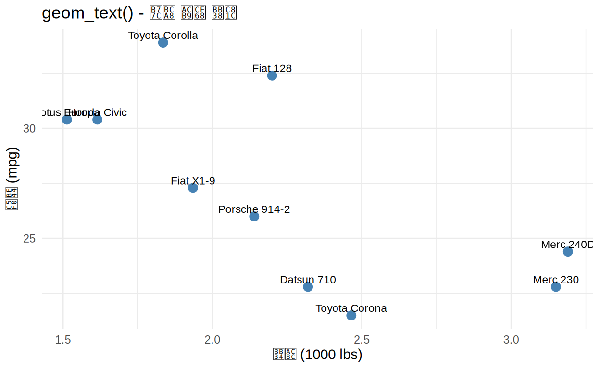
해결: ggrepel 패키지
ggrepel은 라벨이 점과 서로 겹치지 않도록 자동으로 위치를 조정합니다.
# 해결: geom_text_repel() 사용
ggplot(mtcars_labeled, aes(x = wt, y = mpg, label = model)) +
geom_point(color = "steelblue", size = 3) +
geom_text_repel(
size = 3,
box.padding = 0.5, # 라벨 주변 여백
point.padding = 0.3, # 점 주변 여백
segment.color = "grey50" # 연결선 색상
) +
labs(
title = "geom_text_repel() - 겹침 해결!",
x = "무게 (1000 lbs)",
y = "연비 (mpg)"
) +
theme_minimal()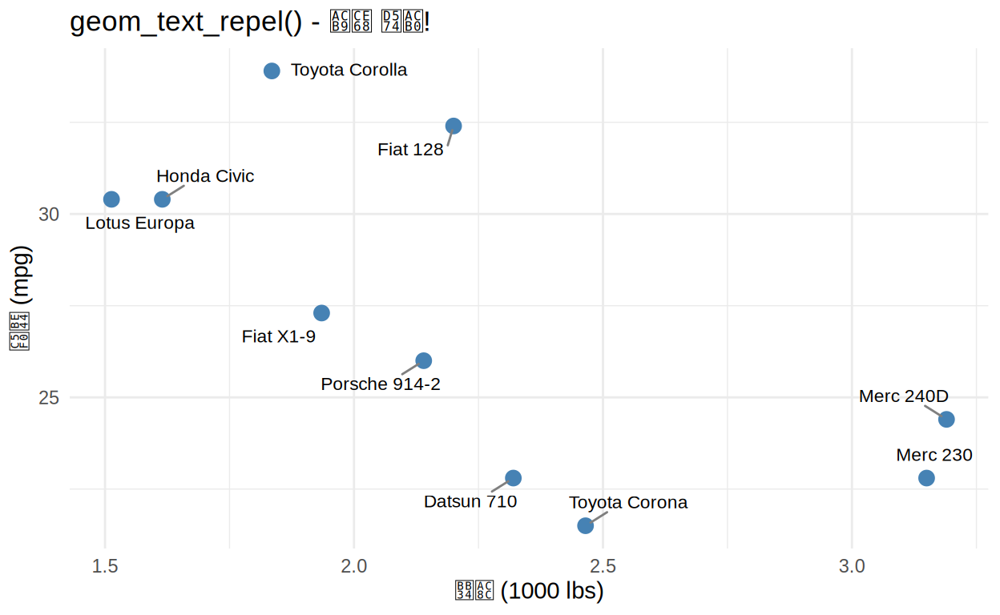
ggrepel 주요 옵션
| 옵션 | 설명 | 기본값 |
|---|---|---|
box.padding |
라벨 박스 주변 여백 | 0.25 |
point.padding |
점 주변 여백 | 0 |
segment.color |
연결선 색상 | “black” |
max.overlaps |
허용 최대 겹침 수 | 10 |
force |
반발력 강도 | 1 |
연습문제: ggrepel 사용
아래 코드를 완성하여 라벨 겹침 문제를 해결하세요.
# iris 데이터에서 상위 10개 선택
iris_top <- iris %>%
mutate(id = row_number()) %>%
arrange(desc(Sepal.Length)) %>%
slice(1:10)
# ggrepel로 라벨 추가
ggplot(iris_top, aes(x = Sepal.Length, y = Sepal.Width, label = id)) +
geom_point(aes(color = Species), size = 3) +
___( # geom_text_repel 사용
size = 3,
box.padding = ___,
segment.color = "grey50"
) +
labs(title = "붓꽃 데이터 상위 10개") +
theme_minimal()# geom_text_repel() 함수 사용
# box.padding = 0.5 정도가 적당합니다iris_top <- iris %>%
mutate(id = row_number()) %>%
arrange(desc(Sepal.Length)) %>%
slice(1:10)
ggplot(iris_top, aes(x = Sepal.Length, y = Sepal.Width, label = id)) +
geom_point(aes(color = Species), size = 3) +
geom_text_repel(
size = 3,
box.padding = 0.5,
segment.color = "grey50"
) +
labs(title = "붓꽃 데이터 상위 10개") +
theme_minimal()실전 예제: Volcano Plot
유전체 연구에서 자주 사용되는 Volcano Plot입니다.
ggplot(gene_data, aes(x = log2FC, y = neg_log10p)) +
geom_point(aes(color = significant), alpha = 0.6, size = 2) +
geom_hline(yintercept = -log10(0.05), linetype = "dashed", color = "red") +
geom_vline(xintercept = c(-1, 1), linetype = "dashed", color = "blue") +
geom_text_repel(
aes(label = label),
size = 3,
max.overlaps = 15,
box.padding = 0.5
) +
scale_color_manual(values = c("NS" = "gray", "Significant" = "red")) +
labs(
title = "Volcano Plot: 유전자 발현 차이",
x = "Log2 Fold Change",
y = "-Log10(P-value)",
color = "Significance"
) +
theme_classic() +
theme(legend.position = "top")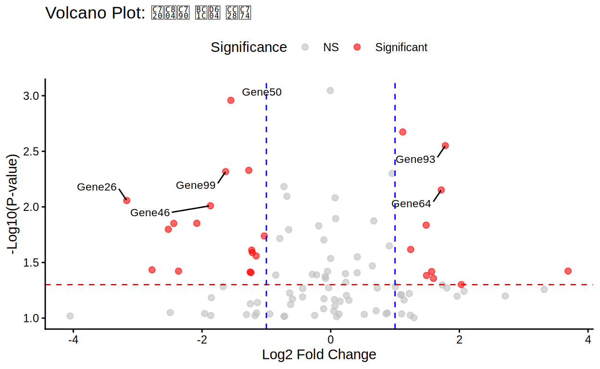
2장: patchwork - 다중 플롯 조합
왜 patchwork인가?
학술 논문에서는 여러 그래프를 Figure 1A, 1B, 1C처럼 조합해야 합니다. patchwork는 직관적인 연산자로 이를 가능하게 합니다:
| 연산자 | 기능 | 예시 |
|---|---|---|
+ |
순서대로 배치 | p1 + p2 |
\| |
옆으로 나란히 | p1 \| p2 |
/ |
위아래로 쌓기 | p1 / p2 |
() |
그룹화 | (p1 \| p2) / p3 |
기본 사용법
# 3개의 플롯 생성
p1 <- ggplot(mtcars, aes(x = mpg, y = disp)) +
geom_point(color = "steelblue") +
geom_smooth(method = "lm", se = FALSE, color = "red") +
labs(title = "연비 vs. 배기량") +
theme_bw()
p2 <- ggplot(mtcars, aes(x = factor(cyl), y = mpg, fill = factor(cyl))) +
geom_boxplot(show.legend = FALSE) +
labs(title = "실린더별 연비", x = "Cylinders") +
theme_bw()
p3 <- ggplot(mtcars, aes(x = hp)) +
geom_histogram(bins = 15, fill = "coral", color = "black") +
labs(title = "마력 분포") +
theme_bw()
# 조합: (p1과 p2를 나란히) 그 아래 p3
(p1 | p2) / p3## `geom_smooth()` using formula = 'y ~ x'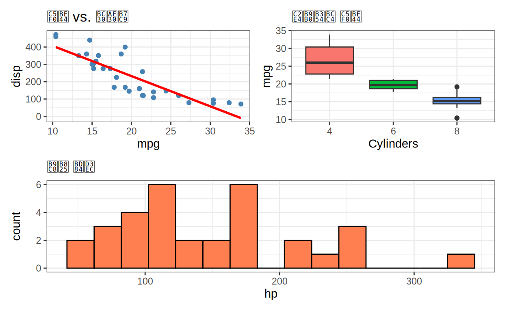
Figure 라벨 추가
# plot_annotation으로 A, B, C 라벨 추가
(p1 | p2) / p3 +
plot_annotation(
title = "자동차 성능 분석 종합",
tag_levels = "A", # A, B, C 자동 라벨
theme = theme(plot.title = element_text(size = 14, face = "bold"))
)## `geom_smooth()` using formula = 'y ~ x'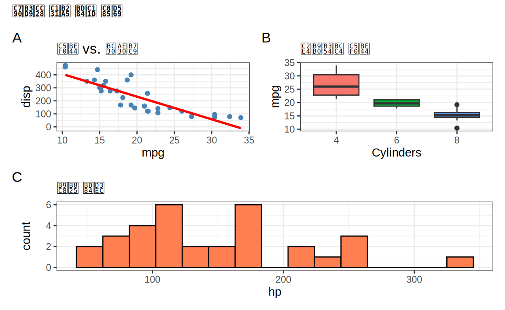
연습문제: patchwork 사용
4개의 플롯을 2x2 그리드로 배치하세요.
# 4개의 플롯 생성
plot_a <- ggplot(health_data, aes(x = age, y = bmi, color = gender)) +
geom_point(alpha = 0.6) +
labs(title = "나이와 BMI") +
theme_minimal()
plot_b <- ggplot(health_data, aes(x = age, y = sbp, color = gender)) +
geom_point(alpha = 0.6) +
labs(title = "나이와 혈압") +
theme_minimal()
plot_c <- ggplot(health_data, aes(x = bmi, fill = gender)) +
geom_density(alpha = 0.5) +
labs(title = "BMI 분포") +
theme_minimal()
plot_d <- ggplot(health_data, aes(x = gender, y = sbp, fill = gender)) +
geom_boxplot(show.legend = FALSE) +
labs(title = "성별 혈압") +
theme_minimal()
# 2x2 그리드로 조합 (A, B 위, C, D 아래)
# 힌트: (plot_a | plot_b) / (plot_c | plot_d)
___ +
plot_annotation(tag_levels = "A")# | 는 옆으로 배치
# / 는 위아래로 배치
# (plot_a | plot_b) / (plot_c | plot_d)plot_a <- ggplot(health_data, aes(x = age, y = bmi, color = gender)) +
geom_point(alpha = 0.6) +
labs(title = "나이와 BMI") +
theme_minimal()
plot_b <- ggplot(health_data, aes(x = age, y = sbp, color = gender)) +
geom_point(alpha = 0.6) +
labs(title = "나이와 혈압") +
theme_minimal()
plot_c <- ggplot(health_data, aes(x = bmi, fill = gender)) +
geom_density(alpha = 0.5) +
labs(title = "BMI 분포") +
theme_minimal()
plot_d <- ggplot(health_data, aes(x = gender, y = sbp, fill = gender)) +
geom_boxplot(show.legend = FALSE) +
labs(title = "성별 혈압") +
theme_minimal()
(plot_a | plot_b) / (plot_c | plot_d) +
plot_annotation(tag_levels = "A")Quiz: patchwork
3장: 색맹 친화적 색상
왜 색맹 친화적 색상이 중요한가?
전 세계 남성의 8%, 여성의 0.5%가 색맹입니다. 학술 출판에서는 색맹 친화적 색상을 사용해야 합니다.
Viridis 팔레트
viridis는 색맹 친화적이며, 흑백 인쇄에서도 구별 가능합니다.
# 연속형 데이터
ggplot(iris, aes(x = Sepal.Length, y = Sepal.Width, color = Petal.Length)) +
geom_point(size = 3) +
scale_color_viridis_c(option = "viridis") +
labs(title = "Viridis 연속형 팔레트", color = "Petal Length") +
theme_minimal()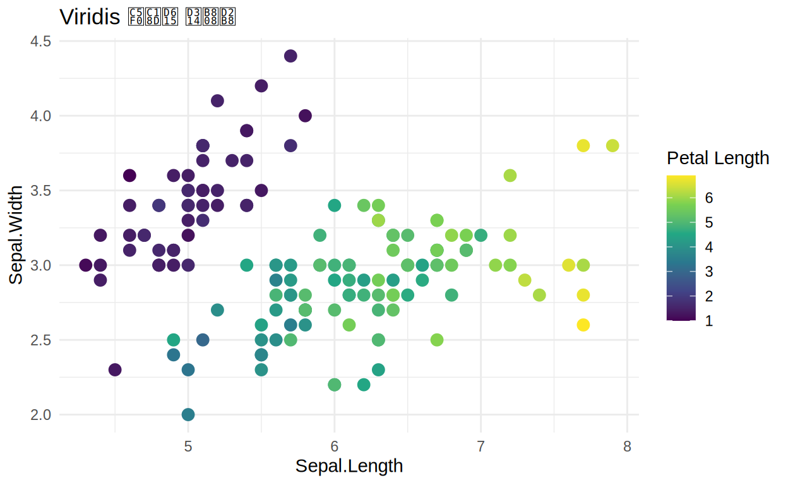
Viridis 옵션들
base_plot <- ggplot(iris, aes(x = Sepal.Length, y = Sepal.Width, color = Petal.Length)) +
geom_point(size = 2) +
theme_minimal() +
theme(legend.position = "none")
p_viridis <- base_plot + scale_color_viridis_c(option = "viridis") + labs(title = "viridis")
p_magma <- base_plot + scale_color_viridis_c(option = "magma") + labs(title = "magma")
p_plasma <- base_plot + scale_color_viridis_c(option = "plasma") + labs(title = "plasma")
p_cividis <- base_plot + scale_color_viridis_c(option = "cividis") + labs(title = "cividis")
(p_viridis | p_magma) / (p_plasma | p_cividis) +
plot_annotation(title = "Viridis 색상 옵션")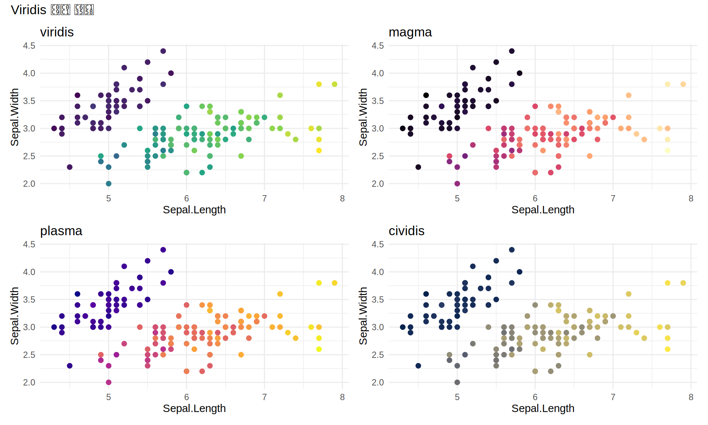
범주형 데이터용 Viridis
ggplot(iris, aes(x = Sepal.Length, y = Sepal.Width, color = Species)) +
geom_point(size = 3) +
scale_color_viridis_d(option = "plasma", begin = 0.2, end = 0.8) +
labs(title = "Viridis 범주형 팔레트 (viridis_d)") +
theme_minimal()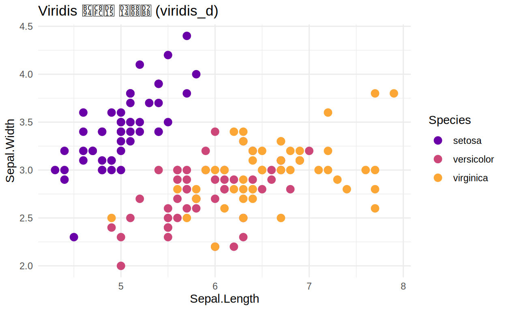
연습문제: 색상 팔레트 적용
mtcars 데이터에 viridis 색상을 적용하세요.
# mpg를 색상으로, cyl을 모양으로
ggplot(mtcars, aes(x = wt, y = hp, color = mpg, shape = factor(cyl))) +
geom_point(size = 4, alpha = 0.7) +
scale_color_viridis_c(option = "___") + # plasma, magma, viridis 중 선택
scale_shape_manual(values = c(16, 17, 15)) +
labs(
title = "자동차 데이터: Viridis 색상",
x = "무게 (1000 lbs)",
y = "마력",
color = "연비",
shape = "실린더"
) +
theme_minimal()# option = "plasma", "magma", "viridis", "cividis" 중 하나 선택ggplot(mtcars, aes(x = wt, y = hp, color = mpg, shape = factor(cyl))) +
geom_point(size = 4, alpha = 0.7) +
scale_color_viridis_c(option = "plasma") +
scale_shape_manual(values = c(16, 17, 15)) +
labs(
title = "자동차 데이터: Viridis 색상",
x = "무게 (1000 lbs)",
y = "마력",
color = "연비",
shape = "실린더"
) +
theme_minimal()피해야 할 색상 조합
빨강-초록 조합은 적록색맹에서 구별이 불가능합니다.
# 피해야 할 예시
bad_colors <- ggplot(iris, aes(x = Sepal.Length, fill = Species)) +
geom_histogram(bins = 20, alpha = 0.7, position = "identity") +
scale_fill_manual(values = c("red", "green", "blue")) +
labs(title = "피해야 할 조합: 빨강-초록") +
theme_minimal()
# 좋은 예시
good_colors <- ggplot(iris, aes(x = Sepal.Length, fill = Species)) +
geom_histogram(bins = 20, alpha = 0.7, position = "identity") +
scale_fill_viridis_d(option = "plasma") +
labs(title = "권장: Viridis 팔레트") +
theme_minimal()
bad_colors | good_colors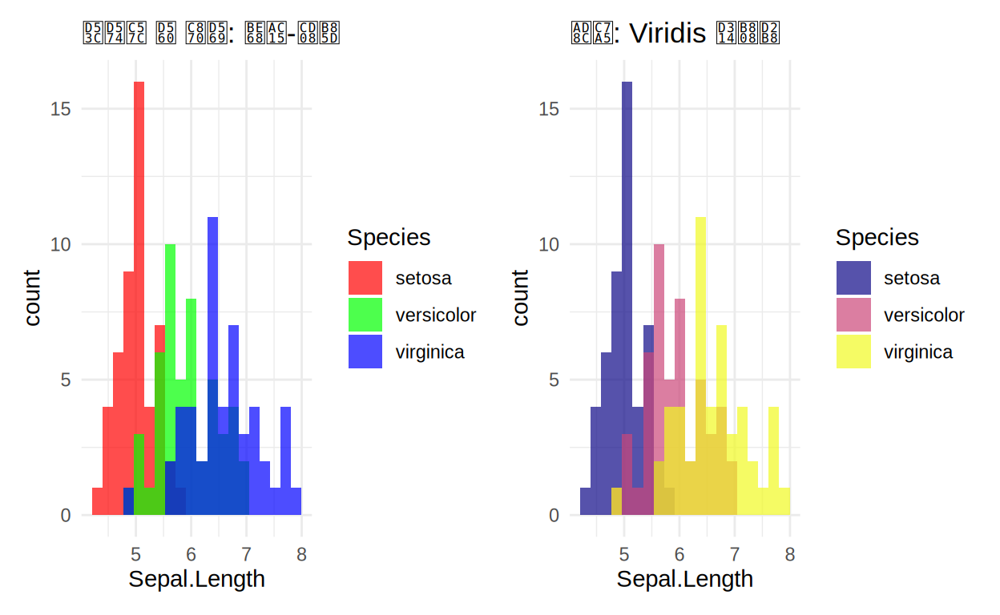
4장: 학술지 테마와 스타일
ggplot2 내장 테마
base <- ggplot(mtcars, aes(x = wt, y = mpg)) +
geom_point(color = "steelblue", size = 2) +
labs(x = "Weight", y = "MPG")
p_gray <- base + theme_gray() + labs(title = "theme_gray()")
p_bw <- base + theme_bw() + labs(title = "theme_bw()")
p_minimal <- base + theme_minimal() + labs(title = "theme_minimal()")
p_classic <- base + theme_classic() + labs(title = "theme_classic()")
(p_gray | p_bw) / (p_minimal | p_classic) +
plot_annotation(title = "ggplot2 내장 테마 비교")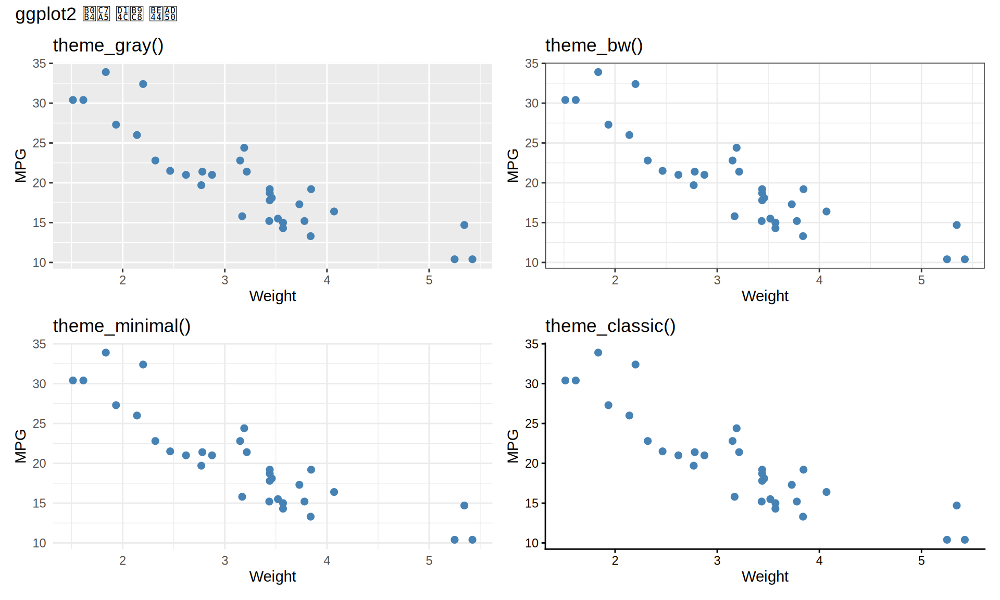
학술지별 추천 테마
| 학술지 | 추천 테마 | 특징 |
|---|---|---|
| Nature, Science | theme_classic() |
축만 표시, 격자 없음 |
| NEJM, Lancet | theme_bw() |
흰색 배경, 검은 테두리 |
| PLOS ONE | theme_minimal() |
최소한의 요소 |
테마 커스터마이징
ggplot(mtcars, aes(x = wt, y = mpg)) +
geom_point(color = "steelblue", size = 3) +
geom_smooth(method = "lm", se = TRUE, color = "red") +
labs(
title = "자동차 무게와 연비의 관계",
subtitle = "미국 자동차 32종 (1973-74 모델)",
x = "무게 (1000 lbs)",
y = "연비 (miles per gallon)",
caption = "데이터: mtcars | 분석: 연세대 산업보건 연구소"
) +
theme_classic(base_size = 12) +
theme(
plot.title = element_text(size = 14, face = "bold", hjust = 0),
plot.subtitle = element_text(size = 10, color = "gray40"),
axis.title = element_text(size = 11, face = "bold"),
axis.text = element_text(size = 10),
plot.caption = element_text(size = 8, color = "gray50", hjust = 1)
)## `geom_smooth()` using formula = 'y ~ x'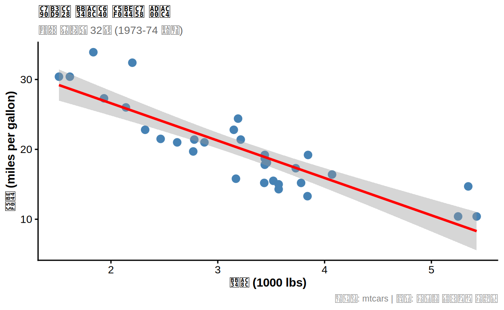
연습문제: 테마 적용
학술지 스타일 그래프를 만드세요.
ggplot(clinical_data, aes(x = treatment, y = response, fill = treatment)) +
geom_boxplot(alpha = 0.7, outlier.shape = NA) +
geom_jitter(width = 0.2, alpha = 0.3, size = 1) +
scale_fill_viridis_d(option = "plasma", begin = 0.3, end = 0.9) +
labs(
title = "치료군별 반응",
subtitle = "임상시험 결과 (N=100)",
x = "치료군",
y = "반응 점수"
) +
theme___(base_size = 12) + # classic, bw, minimal 중 선택
theme(
legend.position = "___", # none, top, bottom, right 중 선택
plot.title = element_text(face = "bold")
)# theme_classic() 또는 theme_bw() 사용
# legend.position = "none" 으로 범례 제거ggplot(clinical_data, aes(x = treatment, y = response, fill = treatment)) +
geom_boxplot(alpha = 0.7, outlier.shape = NA) +
geom_jitter(width = 0.2, alpha = 0.3, size = 1) +
scale_fill_viridis_d(option = "plasma", begin = 0.3, end = 0.9) +
labs(
title = "치료군별 반응",
subtitle = "임상시험 결과 (N=100)",
x = "치료군",
y = "반응 점수"
) +
theme_classic(base_size = 12) +
theme(
legend.position = "none",
plot.title = element_text(face = "bold")
)5장: ggsave - 고해상도 저장
ggsave 기본 사용법
# 플롯 생성
p <- ggplot(mtcars, aes(x = wt, y = mpg)) +
geom_point() +
theme_classic()
# PNG 저장
ggsave(
filename = "figure1.png",
plot = p,
width = 8, # 너비 (inch)
height = 6, # 높이 (inch)
dpi = 300, # 해상도
units = "in"
)
# PDF 저장 (벡터 형식)
ggsave(
filename = "figure1.pdf",
plot = p,
width = 8,
height = 6,
device = cairo_pdf
)학술지별 권장 설정
| 학술지 | 해상도 (DPI) | 파일 형식 | 권장 너비 |
|---|---|---|---|
| Nature | 300-600 | PDF, TIFF | Single: 89 mm |
| Science | 300+ | PDF, TIFF | Single: 5.5 cm |
| NEJM | 300-600 | TIFF | Double: 6.75 in |
| PLOS ONE | 300+ | TIFF | Max: 17.35 cm |
벡터 vs 래스터
| 형식 | 특징 | 용도 |
|---|---|---|
| 벡터, 확대해도 선명 | 논문 제출 | |
| TIFF | 래스터, 고품질 | 인쇄용 |
| PNG | 래스터, 투명 배경 | 프레젠테이션 |
Quiz: ggsave
6장: 출판 품질 체크리스트
Before & After 비교
Before (기본 ggplot2):
# 기본 플롯
ggplot(mtcars, aes(x = wt, y = mpg, color = factor(cyl))) +
geom_point() +
geom_smooth(method = "lm")## `geom_smooth()` using formula = 'y ~ x'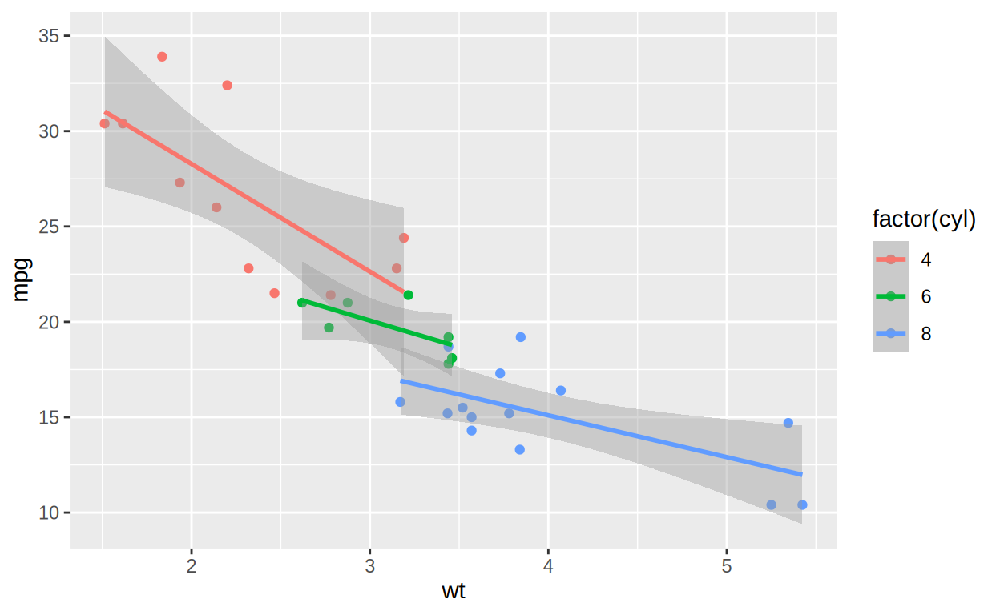
After (출판 품질):
# 출판 품질 플롯
mtcars_top5 <- mtcars %>%
tibble::rownames_to_column("model") %>%
arrange(desc(mpg)) %>%
slice(1:5)
ggplot(mtcars, aes(x = wt, y = mpg, color = factor(cyl), shape = factor(cyl))) +
geom_point(size = 3, alpha = 0.7) +
geom_smooth(method = "lm", se = TRUE, linewidth = 0.8) +
geom_text_repel(
data = mtcars_top5,
aes(label = model),
size = 3,
max.overlaps = 10
) +
scale_color_viridis_d(
option = "plasma",
name = "Cylinders",
labels = c("4 cyl", "6 cyl", "8 cyl")
) +
scale_shape_manual(
values = c(16, 17, 15),
name = "Cylinders",
labels = c("4 cyl", "6 cyl", "8 cyl")
) +
labs(
title = "Relationship Between Vehicle Weight and Fuel Efficiency",
subtitle = "US automobiles (1973-74 models, n=32)",
x = "Weight (1000 lbs)",
y = "Fuel Efficiency (miles per gallon)",
caption = "Data: Henderson and Velleman (1981) | Linear regression with 95% CI"
) +
theme_classic(base_size = 11) +
theme(
plot.title = element_text(size = 13, face = "bold"),
plot.subtitle = element_text(size = 10, color = "gray40"),
axis.title = element_text(face = "bold"),
legend.position = c(0.85, 0.8),
legend.background = element_rect(fill = "white", color = "black", linewidth = 0.3),
plot.caption = element_text(size = 8, color = "gray50", hjust = 0)
)## `geom_smooth()` using formula = 'y ~ x'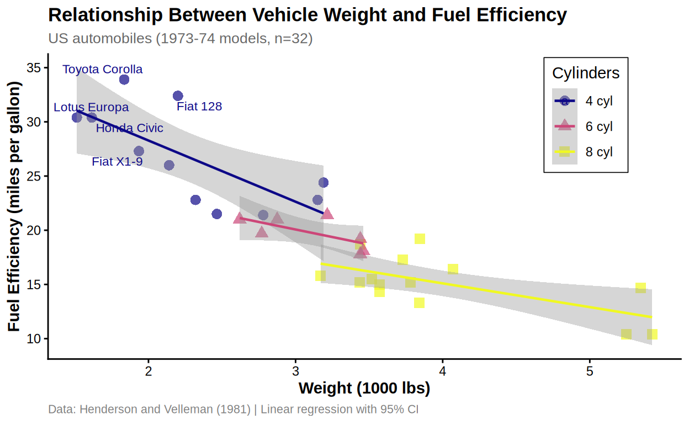
출판 품질 체크리스트
데이터 정확성: - [ ] 모든 수치가 올바른가? - [ ] 에러바가 SE인지 CI인지 명시? - [ ] N 수가 표시되어 있는가?
시각적 요소: - [ ] 모든 축에 명확한 레이블과 단위? - [ ] 글꼴 크기가 적절한가? (최소 7pt) - [ ] 색맹 친화적 색상 사용? - [ ] 범례 위치가 적절한가?
해상도 및 포맷: - [ ] 해상도 300 DPI 이상? - [ ] 적절한 파일 형식? (PDF/TIFF) - [ ] 크기가 학술지 규정 준수?
7장: 종합 예제
다중 패널 Figure 완성본
# Panel A: 치료군별 반응
p_a <- ggplot(clinical_data, aes(x = treatment, y = response, fill = treatment)) +
geom_boxplot(alpha = 0.7, outlier.shape = NA) +
geom_jitter(width = 0.2, alpha = 0.3, size = 1) +
scale_fill_viridis_d(option = "plasma", begin = 0.3, end = 0.9) +
labs(title = "Treatment Response", x = "Group", y = "Response Score") +
theme_classic() +
theme(legend.position = "none", plot.title = element_text(face = "bold", size = 11))
# Panel B: 나이와 반응의 관계
p_b <- ggplot(clinical_data, aes(x = age, y = response, color = treatment)) +
geom_point(size = 2, alpha = 0.6) +
geom_smooth(method = "lm", se = TRUE, linewidth = 0.8) +
scale_color_viridis_d(option = "plasma", begin = 0.3, end = 0.9) +
labs(title = "Age vs. Response", x = "Age (years)", y = "Response Score") +
theme_classic() +
theme(legend.position = c(0.15, 0.85),
legend.background = element_rect(fill = "white", color = "black", linewidth = 0.3),
legend.title = element_text(size = 9),
plot.title = element_text(face = "bold", size = 11))
# Panel C: 반응 분포
p_c <- ggplot(clinical_data, aes(x = response, fill = treatment)) +
geom_density(alpha = 0.6) +
scale_fill_viridis_d(option = "plasma", begin = 0.3, end = 0.9) +
labs(title = "Response Distribution", x = "Response Score", y = "Density") +
theme_classic() +
theme(legend.position = "top",
plot.title = element_text(face = "bold", size = 11))
# Panel D: 나이 분포
p_d <- ggplot(clinical_data, aes(x = treatment, y = age, fill = treatment)) +
geom_violin(alpha = 0.7) +
geom_boxplot(width = 0.1, fill = "white") +
scale_fill_viridis_d(option = "plasma", begin = 0.3, end = 0.9) +
labs(title = "Age by Treatment Group", x = "Group", y = "Age (years)") +
theme_classic() +
theme(legend.position = "none", plot.title = element_text(face = "bold", size = 11))
# 조합
(p_a | p_b) / (p_c | p_d) +
plot_annotation(
title = "Phase II Clinical Trial Results",
subtitle = "Randomized controlled trial (N=100 patients)",
caption = "Error bars: 95% CI | *p<0.05, **p<0.01",
tag_levels = "A",
theme = theme(
plot.title = element_text(size = 14, face = "bold", hjust = 0.5),
plot.subtitle = element_text(size = 11, hjust = 0.5, color = "gray40"),
plot.caption = element_text(size = 9, hjust = 0)
)
)## `geom_smooth()` using formula = 'y ~ x'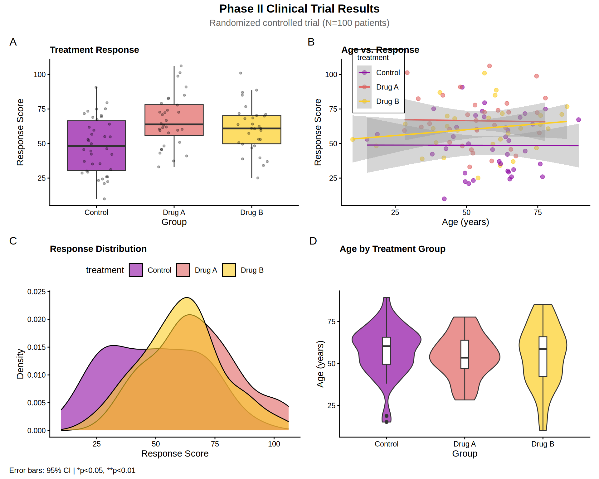
종합 퀴즈
학습 완료!
이번 과정에서 배운 내용:
- ggrepel: 텍스트 라벨 겹침 방지
- patchwork: 다중 패널 Figure 조합 (A, B, C 라벨링)
- viridis: 색맹 친화적 색상 팔레트
- 테마 커스터마이징: 학술지 스타일 적용
- ggsave: 고해상도 저장 (300+ DPI)
- 출판 체크리스트: 전문적인 Figure 제작
다음 단계:
- Chapter 7: 인터랙티브 시각화 (plotly, shiny)
- 실습 프로젝트: 실제 논문용 Figure 제작
8장: 심화 퀴즈 🧠
코드 결과 예측 퀴즈
오류 찾기 퀴즈
빈칸 채우기 퀴즈
개념 심화 퀴즈
🏆 학습 결과 확인
📊 Part III-2: 논문 출판 수준 그래픽
<p style="margin: 0; font-size: 0.9em;">정답 수</p>
<p style="margin: 5px 0 0 0; font-size: 2em; font-weight: bold;" id="correct-count">0</p><p style="margin: 0; font-size: 0.9em;">총 퀴즈</p>
<p style="margin: 5px 0 0 0; font-size: 2em; font-weight: bold;" id="total-count">0</p><p style="margin: 0; font-size: 0.9em;">점수</p>
<p style="margin: 5px 0 0 0; font-size: 2em; font-weight: bold;" id="score-percent">0%</p>※ 퀴즈를 풀면 자동으로 점수가 업데이트됩니다